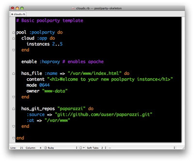

Cloud management. Simplified.
PoolParty is a cloud management system. PoolParty makes it easy to manage powerful and complex deployments on cloud computing services such as Amazon EC2.

Features:
- built-in scaling, self-healing, monitoring, and load-balancing
- support for VMware, for testing clouds
- dependency resolution is based on Chef
- clear and extensible configuration
Getting Started
0. Pre-flight check
Setup Amazon EC2 or VMware (Fusion)
1. Install PoolParty gem

gem install --source http://gems.github.com auser-poolparty
2. Run the installer
Now run the PoolParty installer
install-poolparty
3. Start your cloud!
cloud start -v
What next?
Check out our getting-started guide